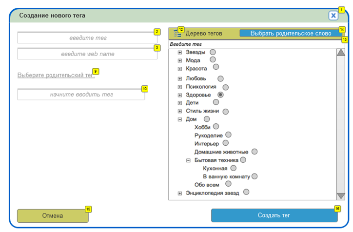

Представим, что вы в составе большой команды разрабатываете сложный интерактивный сайт. Одной из сотен функций сайта является работа с тегами — тематическими метками материалов.
Ваша задача — обеспечить создание тегов на клиентской стороне.
Вся предварительная работа коллегами уже проведена: аналитики изучили и зафиксировали требования заказчика, дизайнеры нарисовали интерфейс, верстальщики его сверстали, серверные программисты обеспечили работу бэкенда.
Достигнута договорённость, о том, что всплывающее окно создания тега должно открываться по клику на элементы с классом show-create-tag-window. Например, вот на эту кнопку:
HTML-разметка диалога должна загружаться из файла, размещённого по адресу, указанному в атрибуте data-popup-url. Сейчас по указанному адресу расположена статическая вёрстка окна, подготовленная верстальщиками. Наполнение его условно, в частности, указаны несуществующие теги. Реальный список тегов нужно загружать AJAX'ом c сервера. Для имитации обращения к серверу используйте загрузку из файла data/tags.json
Вам нужно изучить требования к интерфейсу разработать в файле js/js.js скрипт, обеспечивающий появление диалога при клике на кнопку. Элементы диалога должны вести себя в соответствии со спецификацией.
Все необходимые скрипты и стили уже подключены к главной странице, её содержимое править не нужно. Для открытия всплывающих окон используйте функцию popupOpen из js/popup.js (менять её не нужно, т. к. она уже многократно используется в других интерфейсах сайта). Для организации выпадающего списка — jQuery UI autocomplete (подключен).
По завершению работы форма должна сгенерировать POST-запрос с параметрами title, name, parent_name на адрес /tag.

| Метка | Название | Взаимодействие | Описание |
1 |
Пиктограмма "Закрыть" |
При клике: |
|
2 |
Поле "Название тега" |
|
До 50 символов. Только русские буквы |
3 |
Поле "Название тега, англ." |
|
До 50 символов. Только английские буквы. Необязательное поле. Является частью url страницы тега. |
9 |
Блок "Родительский тег" |
|
У тега может не быть родительского тега. Тогда поле пустое. У тега может быть только 1 родительский тег |
10 |
Поле "Родительский тег" |
|
Поле с автодополнением с 3го символа по всем тегам. Демонстрирует результаты с адресом родительского тега в скобках. |
12 |
Блок "Дерево тегов" |
|
Отображаются все теги системы в древовидной форме. Теги, имеющие дочерние теги отображаются с пиктограммами "Развернуть" / "Свернуть". |
13 |
Поле "Поиск" |
При клике: |
|
14 |
Кнопка "Выбрать родительское слово" |
При клике: |
|
15 |
Кнопка "Отмена" |
При клике: |
|
16 |
Кнопка "Создать тег" |
При клике: |
|
Если вам кажется, что какой-то информации не хватает, придумайте сами или проигнорируйте. Пожалуйста, зафиксируйте время, которое потребовалось вам для решения задачи.
Если какая-то часть работы кажется вам слишком трудоёмкой, пропустите её, описав в комментариях к коду принцип решения.